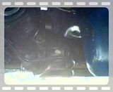
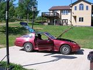
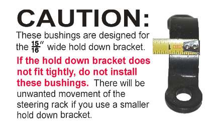
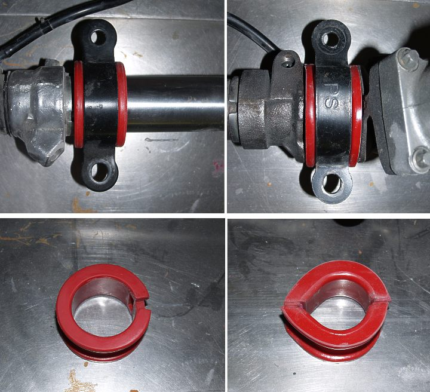

-
Last summer i was having a problem with the steering rack moving side to side. I replace the rack twice, two sets of new bushings, two cross members , and three new brackets that hold the rack in. I cant figure out. any ideas. Here is a video i took yesterday.
86na2t + holset
feedback
viewtopic.php?f=18&t=6114&hilit=andrew+gardner -
Have you tried the poly bushings yet?
In recent times it has been confirmed that there are 2 different size brackets on one end of the rack even though Nissan only has one part number for it. The differences were in the width of the bracket.
Try making your own bracket out of flat stock and bend it accordingly.
1986 300ZX Turbo…sold
1990 Skyline GT-R…new money pit
2014 Juke Nismo RS 6-speed…daily -
That was one of the sets of bushings i tried and yes i now have the wide brackets86na2t + holset
feedback
viewtopic.php?f=18&t=6114&hilit=andrew+gardner -
wtf. that's odd.
are the bolts at the front of the bushings tightened way down? -
Wow, how does it feel when you turn the wheel? does it bind up? I mean can you feel it get harder to turn? if not just get the right bracket and busing. or make one, its not hard to do, if you have a torch.I have a speeding problem.
 -
it dose not bind at all. The car wanders all over the road. i am in the process of making solid brackets for the driver side of the rack using 1 1/2 wide, 3/16 steel. It should not move at all after that.86na2t + holset
feedback
viewtopic.php?f=18&t=6114&hilit=andrew+gardner -
Are you sure you have the wide hold downs? That movement is typical
of a narrow hold down installed on the wide hold-down bushings.

 -
I am 100% sure that i have the wide bracket. I ordered 2 from nissan that ended up being the narrow ones. I found a wide one on an 84 na in the jy. I finished making the bottom half of the solid brackets on Friday. Monday i am going to make the top half. I will post pics when i finish.86na2t + holset
feedback
viewtopic.php?f=18&t=6114&hilit=andrew+gardner -
Do you have a couple of inches play at the rim of the steering wheel?
If so, get someone to hold the steering shaft with a pair of vise grips and see if you have the same play.
There is a rubber dampner that sits inside the tube the shaft goes through that can deteriorate and cause slack.
Usually play at the rack bushings will show up as a steering wheel that will be centered one time and then, after a turn, will no longer be centered and you will see the indexing change depending on which direction your last turn was.
I can't see the video but all car racks move a little but they return to a center position in normal operation. -
I installed my new rack, tie rod ends with MFP rack bushings and with the bolts torqued to spec I get the horrid metal to poly bushing sound.
I went as far as torquing down to 50ft lbs and still the same. I do have the 15/16" brackets that fill the bushings nicely, mine slightly moves. Not as much as the video but definitely moves.. also I was getting this noise from the drivers side bushing which hardened up, I always wondered what down by the rack was making noise, I knew it wasn't the steering linkage to the rack.
Edit: I do not have a 15/16" bracket on the drivers side. Only on the passengers side.Gone - 1988 Shiro
2004 BMW 330Ci
2005 BMW 330i
1991 Twin Turbo Z's (Red and Black)
http://www.E46Turbo330Ci.com -
I bet it has something to do with the rebuilt rack as mine is a rebuild too. I should have some picks of my solid mounts tomorrow. There will be no movement with them.86na2t + holset
feedback
viewtopic.php?f=18&t=6114&hilit=andrew+gardner -
i have the stock one also so I might mic it up to see, seems so far that the issue it with rebuilt racks, mine was a CVU rebuilt rack.Gone - 1988 Shiro
2004 BMW 330Ci
2005 BMW 330i
1991 Twin Turbo Z's (Red and Black)
http://www.E46Turbo330Ci.com -
well the whole front end is replaced and still have wander, maybe attributed to the tires, offset…even the solid brackets to the rack.
next is checking the column fully.Gone - 1988 Shiro
2004 BMW 330Ci
2005 BMW 330i
1991 Twin Turbo Z's (Red and Black)
http://www.E46Turbo330Ci.com -
My steering has not felt "right" ever since the NA2T conversion. While I have tried doing the front end alignment several times, that Jason outlined, it is possible that I have simply not done it properly.Everything is Meaningless. -
ha ha always a possibilityPulseCode wrote: My steering has not felt "right" ever since the NA2T conversion. While I have tried doing the front end alignment several times, that Jason outlined, it is possible that I have simply not done it properly.I have a speeding problem.

Copyright © 2006–. All rights reserved. Privacy Policy